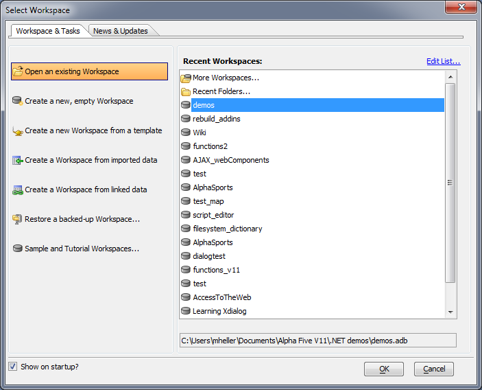

Workspaces
Historically, Alpha Anywhere master projects were called "databases," because historically, Alpha Anywhere was oriented around Dbase-compatible DBF databases.It has been a long time coming, but we've finally changed the terminology, mostly to help new users feel more at home in the IDE. Alpha Anywhere now has Workspaces,
giving it terminology that is consistent with many modern development environments. It's a small change, but you'll see it throughout the product.

If you are really attached to the old terminology, you can change it back in your copy.